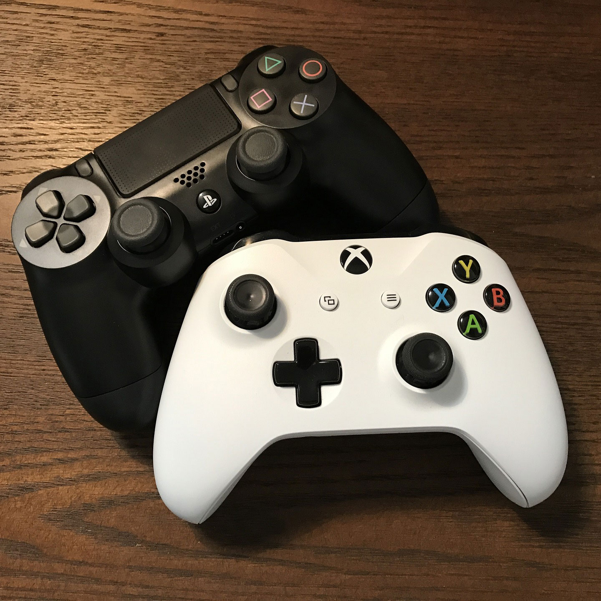

Gaming, or rather Video Games, is what I enjoy during my free time. I mostly play on the PC and sometimes on my 3DS, but I stopped playing on the iPhone. Gaming can be relaxing when I start to feel bored and sometimes I rage quit when I feel angry that I can’t beat a level or didn’t get a rare drop multiple times. Gaming has many different effects on people as they must master the controls of the game to become the best to get the top rank.
Video Games can be play on many different platforms, such as the PlayStation, Nintendo Switch, Xbox, PC, or on your phone. Each of these platforms have a different form of control and coding that allows users to play games. Some game controls make people sit down to play while others make people move around to exercise, like the video game, Ring Fit Adventure. I enjoy playing video games, but I will get bored overtime, until gaming companies releases a new game, so I can buy it and then play on it.
Overall, Gaming has evolved throughout the years as people desire to play something new. Many gaming companies, such as Nintendo or Sega, have designed and created video games to suit the needs of the people. I watch on YouTube and subscribe to Nintendo for any news about the latest releases or upcoming new video games to see if they are fun to play and buy. Gaming is very entertaining to me, which inspires me to get a job as a Graphic Designer, so I can show my work in video games or on websites that people will be amaze as they take a good look at it.